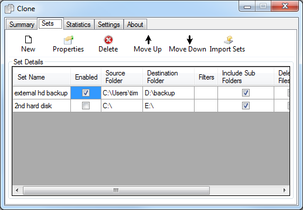
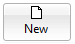
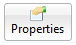
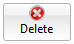
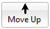
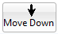
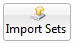

Sets Tab
The configuration screen shown below drives the operation of Clone. It contains a list of "sets" that need to be backed up.

Each item shown in the list above defines a directory or file that will be backed up. You can exclude defined sets from subsequent backups by un-checking the checkbox next to the set name. These sets are configured on the Set Configuration Screen . The set configuration defines the source and destination file / directory as well as a set of parameters that define when a file should be copied and what to do if the file already exists in the destination directory.
The way you define your sets on this screen and the Set Configuration Screen is saved so next time you run Clone the settings are exactly the same as they were previously. This is done automatically, i.e. when you make a change the settings are saved, no save option is required.
The order of the sets in the list above defines the order in which the files will be backed up when Clone runs. The order can be changed using the buttons marked "Move up" and "Move down". For example "Tims Documents" will be backed up first and "laptop backup" last.
Toolbar Options
The options available from this screen are described below, each option is available by clicking on the appropriate toolbar icon :-
|  | Add a new set to be backed up. This option takes you to the set configuration screen |
|  | Edit the set you have currently selected. This option takes you to the set configuration screen |
|  | Remove the set you have selected. |
|  | Move the set that is currently highlighted up. |
|  | Move the set that is currently highlighted down. |
|  | If you are an existing user of clone version 2 this will allow you to import your sets |
|
I want to thank you for Clone which has saved all my files for me. I had used Clone to backup all my files to a second hard drive just before the C drive failed so I have been able to get them all back.
I ordered Clone this morning ! I love it and won’t be able to live without it !!!!! I finally got around to using it with my CD writer last night and I didn’t have any problems (as I expected !). It works perfectly and saves so much time !
I'll be recommending this utility to anyone who needs a back-up solution that is functional without a lot of overblown code.
|